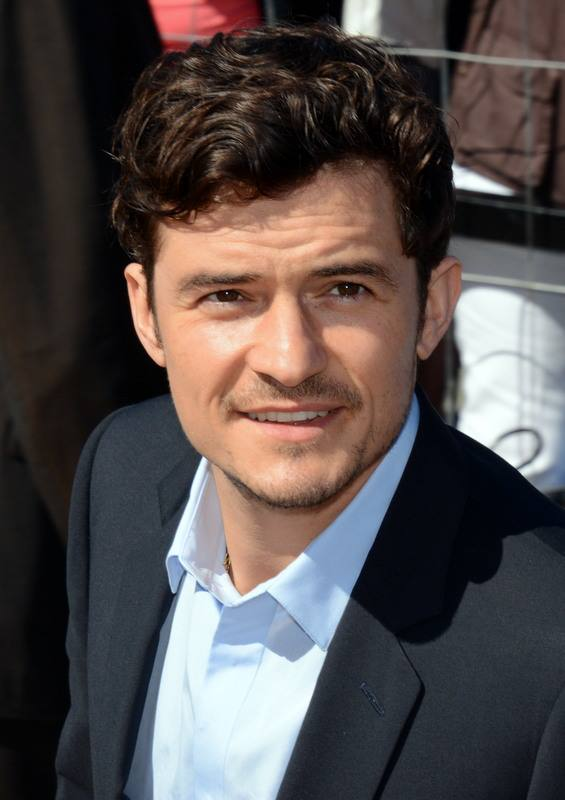
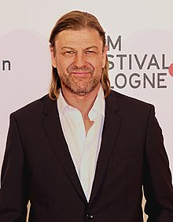
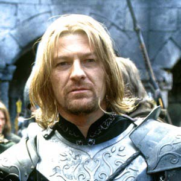

The Lord of the Rings: The Fellowship of the Ring
This is a 2001 epic fantasy adventure film directed by Peter Jackson, based on the first volume of J. R. R. Tolkien's The Lord of the Rings. The film is the first instalment in The Lord of the Rings trilogy and was produced by Barrie M. Osborne, Jackson, Fran Walsh and Tim Sanders, and written by Walsh, Philippa Boyens and Jackson. The film features an ensemble cast including Elijah Wood, Ian McKellen, Liv Tyler, Viggo Mortensen, Sean Astin, Cate Blanchett, John Rhys-Davies, Billy Boyd, Dominic Monaghan, Orlando Bloom, Christopher Lee, Hugo Weaving, Sean Bean, Ian Holm, and Andy Serkis. It was followed by The Two Towers (2002) and The Return of the King (2003).
Cast
1. Orlando Bloom

Orlando Bloom as Legolas Greenleaf: a prince of the elves' Woodland Realm and a skilled archer. Bloom initially auditioned for Faramir, who appears in the second film, a role which went to David Wenham.
1. Sean Bean
 Sean Bean as Boromir: a prince of the Stewards of Gondor who journeys with the Fellowship towards Mordor. Bruce Willis, a fan of the book, expressed interest in the role, while Liam Neeson was sent the script, but passed.
1. Ian McKellen


Ian McKellen as Gandalf: an Istari wizard and mentor to Frodo. Sean Connery was approached for the role, but did not understand the plot, while Patrick Stewart turned it down as he disliked the script. Before being cast, McKellen had to sort his schedule with 20th Century Fox as there was a two-month overlap with X-Men, in which he portrayed Magneto. He enjoyed playing Gandalf the Grey more than his transformed state in the next two films, and based his accent on Tolkien. Unlike his on-screen character, McKellen did not spend much time with the actors playing the hobbits; instead he worked with their scale doubles.